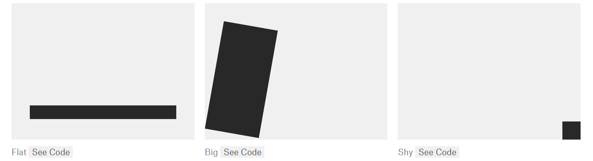

Shapes and Ladders
Inspiration
On reading Programming Design Systems, I was inspired by the way that basic shapes could convey meaning though just their composition.
I plan to use digital tools for this project. I have been experimenting with versions in Photoshop but would like to use p5.js to fix the shapes in relation to the canvas as it is displayed on a webpage. Digital tools make it easy to experiment with variation and repitition of shapes, as well as creating clean shapes.
The relevant pages of 'Programming Design Systems' by Rune Madsen. Here is a link toart by Alexis Beauclair.
Phase 1
I have just experimented at first with the objects and arrangements. Using only black and white shapes and outlines.
To have a consistent theme, I chose a series of shapes expressing movement- how can movement be expressed with still images of shapes?
Phase 2 - In progress
.
Materials
- p5.js web editor
- this is my thoughtful list item